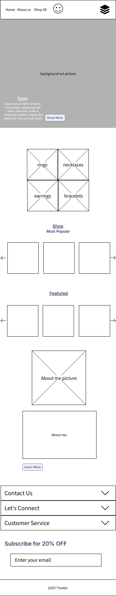
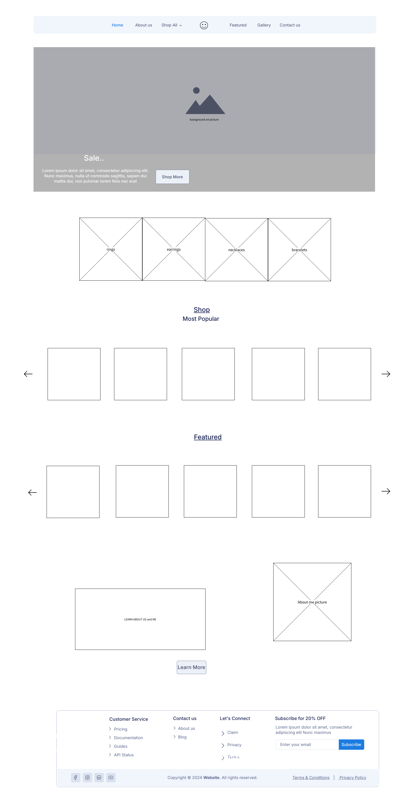

This section will outline the planned content for the website. Each section is designed to provide relevant details for users interested in exploring Native American jewelry and apparel. To make the users engagement process easy and make navigability easy.
The homepage will introduce users to the brand with a visually appealing section that features a main cover art image. This image will act as the website’s front cover, that helps promote sales going on in current time.
Below the main cover art will be four clickable boxes side-by-side. These boxes will link directly to specific product categories could be: rings, earrings, necklaces, and bracelets. This section will serve as a quick and intuitive navigation tool to guide the users.
Further down the homepage, there will be a scrolling product section showcasing two main lists: "Most Popular" and "Featured Products." Each section will consist of 5 product boxes arranged horizontally, allowing users to scroll through them using left and right arrows on desktop, then when the mobile version it goes down to 3 boxes across with the same functionality of scrolling left to right with arrows.
The about page will tell the story behind the business, showcasing its mission and heritage. A picture of my Aunt then a message below or a picture of her making the jewelery to add a personal and authentic touch.
The footer section of the website is designed to provide users with quick access to resources It features collapsible sections for easy navigation on the mobile side, including "Contact Us," "Let's Connect," and "Customer Service," which guide users to support, pricing, blog articles, sales, and social media connections. Additionally, a "Subscribe for 20% OFF" section invites users to enter their email and stay updated on promotions and special offers. At the bottom, the footer displays a simple copyright notice and legal links (e.g., terms and privacy policies). These can be displayed on the website clearly but would have to be put in dropdown format for the mobile view from top to bottom.
Below is the wireframe for the mobile version of the website:
Below is the wireframe for the desktop version of the website, btw the margins got all weird in Wireframe after I started making it, but the mobile should be the correct dimensions:
